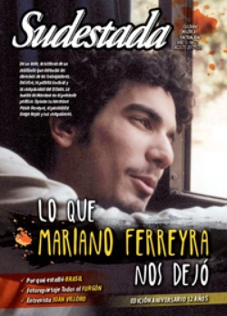

Buscar
Lo que Mariano Ferreyra nos dejó
De un lado, la historia de un militante que defendió los derechos de los trabajadores. Del otro, la patota sindical y la complicidad del Estado. La huella de Mariano en el presente político. El debate después de un juicio polémico. Opinan su hermano Pablo Ferreyra, el periodista Diego Rojas, su compañero ferroviario Leo Franzin y su amigo Patricio El Be.
Edición N° 121
Agosto 2013
Revista bimensual
Comprar edición impresaSumario
- Lo que Mariano Ferreyra nos dejó
- Azurduy vs Colón o cómo invertir el eje de la cuestión
- Los soldados de Chevron
- Doce años
- "Ni la lectura romántica del kirchnerismo ni la conspirativa de la izquierda"
- ¿Por qué estalló Brasil?
- "Leí Rayuela como un manual de vida"
- Al furgón que hay lugar
- En el nombre del padre
- "Me permití sentir el folklore de mi tierra"
- Mapuche, la lucha de la tierra
- Los cuerpos como mercancías
- "Hay una apuesta por una alternativa, pero todavía no se sale de la marginalidad"
- Poder negro y Revolución
Compartir Articulo
1. Es un lunes frío a las 7 de la mañana. El mate apurado antes de salir de la casa no sirvió para despabilarse del todo. Los pasillos anchos de la Facultad no colaboran para paliar el frío invernal. Hay que empezar las recorridas por las aulas del CBC de Avellaneda: las convocatorias son numerosas, las consignas importantes y hay que transmitirlas con claridad; una claridad que resulta difícil a esa hora, cuando los pensamientos se desperezan y los reflejos también. Después todo se vuelve más sencillo, es verdad. Con unas cuantas aulas recorridas, la cosa se va definiendo sola. Mariano y Patricio El Be, que militan juntos, ya van sabiendo cómo ir acompañando el relato del otro. Pero ahora es temprano, y hay que arrancar el día, con la lengua dura y los profesores que protestan y el resignado "pasen, pero tienen dos minutos nomás". En esos momentos cruciales en los que hay que definir quién da el primer paso, el ritual de los lunes se repite una y otra vez; los amigos, entre bostezos y risas cómplices, lo echan a la suerte: "¡piedra, papel o tijera!".
2. La respuesta a la pregunta principal lleva a otra pregunta, la de fondo. ¿Qué cambió en el país tras el asesinato de Mariano Ferreyra? Como primer esbozo de respuesta, es cierto que se logró romper con la dinámica impune que tenía en el país la autoría intelectual de los crímenes políticos. Un elemento histórico, sin duda. ¿Qué quedó igual? La trama de complicidad y sociedad sindical-empresarial, amparada por el Estado, que provocó el crimen sigue en pie. No se ha tocado en absoluto.
Desde hace décadas en la Argentina, las empresas de transporte público (como los trenes y los subtes) recurren a una figura permitida por el Estado para utilizar mano de obra barata en tareas de mantenimiento y limpieza. La estafa se realiza de la siguiente manera: la empresa (de transporte) contrata a otra empresa (de servicio) para evitar incluir a esos trabajadores en el convenio colectivo de esa rama, ahorrando casi el 70 por ciento del salario correspondiente. Este mecanismo se denomina "tercerización", porque simula una relación indirecta. Esta estafa no puede sostenerse sin la complicidad de dos actores fundamentales: el Estado (Ministerio de Trabajo) y los sindicatos (Unión Ferroviaria y Unión Tranviarios Automotor, principalmente). ¿Y cómo una empresa puede asegurarse que el sindicato va a garantizar su apoyo ante semejante abuso? Les propone que sean ellos, los burócratas sindicales, quienes dirijan y usufructúen esas empresas de servicios bajo la oportuna figura de falsas cooperativas (integradas muchas veces por ex transportistas).
El éxito aplastante de la lucha de los trabajadores precarizados del subte en 2006 se convirtió en la pesadilla de los empresarios y los sindicalistas burócratas. A partir de entonces, iluminados por esta experiencia, los tercerizados se fueron organizando y luchando en distintas empresas. El Estado optó por una posición neutra, que en estos casos -entre un agrupamiento incipiente de precarizados y una estructura empresarial-sindical monstruosa- significó claramente un abandono de los derechos obreros. Cuando el Estado elige ausentarse, es la señal de "zona liberada" que empresarios y burócratas precisan para avasallar los derechos de la masa asalariada. El único apoyo de los trabajadores provino del movimiento piquetero (caracterizado por su gran combatividad y nuevas prácticas organizativas) que empezaba a ensayar una táctica de acercamiento al sector ocupado y de una izquierda débil y fragmentada -tanto la tradicional como la independiente-, pero dispuesta a marcar la agenda.
Entonces, entra en escena un nuevo protagonista: una generación de jóvenes pos-2001 con espíritu insurreccional y asambleario que fue recuperando la idea de elevar el reclamo contra el trabajo bajo condiciones de extrema precarización. Nueva militancia. Nuevo compromiso. Ellos no recuerdan la foto del pacto de Olivos (Alfonsín y Menem alejándose a través del parque). Vieron caer a Darío Santillán y levantaron su pañuelo ensangrentado. En su práctica de todos los días late el conflicto entre lo nuevo y lo viejo, entre la secta y el populismo. Vieron Psicosis y Matrix con la misma emoción. Escuchan a Piazzolla y a Radiohead. Van y vienen de la guitarra fogonera a la Playstation. Con menos cuidados que los continuadores del setentismo, se enfrentan con certezas posmodernas a las bestias de caza enfurecidas...
(La nota completa en Sudestada nº 121, agosto de 2013)
Comentarios
Nadia Fink y Martín Azcurra
Articulos más vistos


LIBRERÍA SUDESTADA

Colección infantil

Distribuidora de Libros

Suscripción

Sudestada en URUGUAY

Otros articulos de esta edición
 Malditos: Malcolm X
Malditos: Malcolm X
Poder negro y Revolución
"Vivimos en una época de revoluciones, y la revuelta del negro norteamericano es parte de la rebelión contra la opresión ...
 Sobre el libro Se Trata de nosotras
Sobre el libro Se Trata de nosotras
Los cuerpos como mercancías
El negocio detrás de las sombras. Mecanismos, roles y explotación a partir de redes de trata de personas cada vez ...
 Editorial
Editorial
Los soldados de Chevron
Azurduy vs Colón o cómo invertir el eje de la cuestión
¿Puede el traslado de una estatua transformarse en el gran debate nacional? ¿Qué intereses se ocultan a la sombra del ...
 Entrevista con Luvi Torres
Entrevista con Luvi Torres
"Me permití sentir el folklore de mi tierra"
Lejos de definiciones urgentes y sonidos de mercado, a los 24 años, Luvi Torres construye miradas acerca del canto colectivo ...
 Entrevista a Pablo Ferreyra
Entrevista a Pablo Ferreyra
"Ni la lectura romántica del kirchnerismo ni la conspirativa de la izquierda"
Polémico y cuestionador, Pablo Ferreyra, el hermano de Mariano, se transformó en una figura política nacional clave en la compleja ...